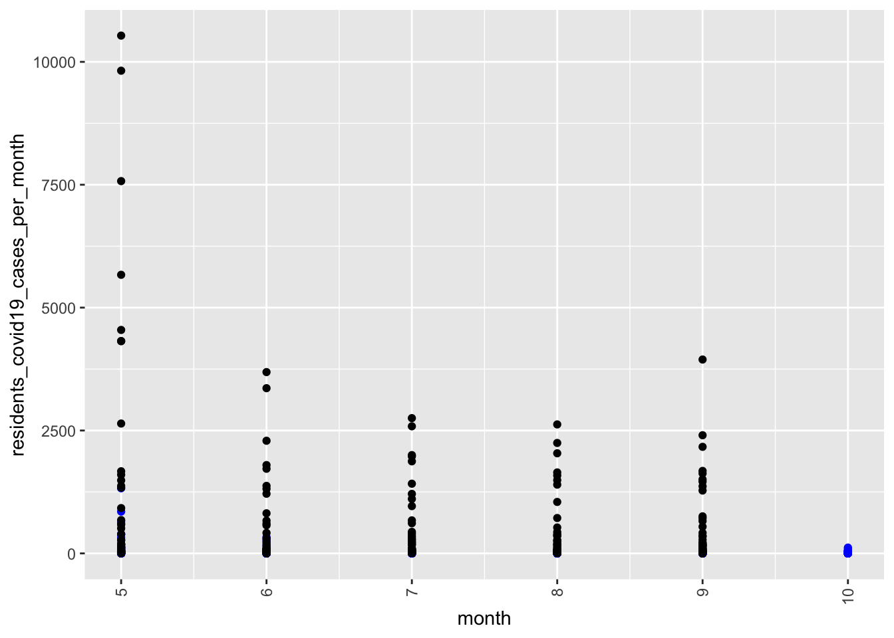
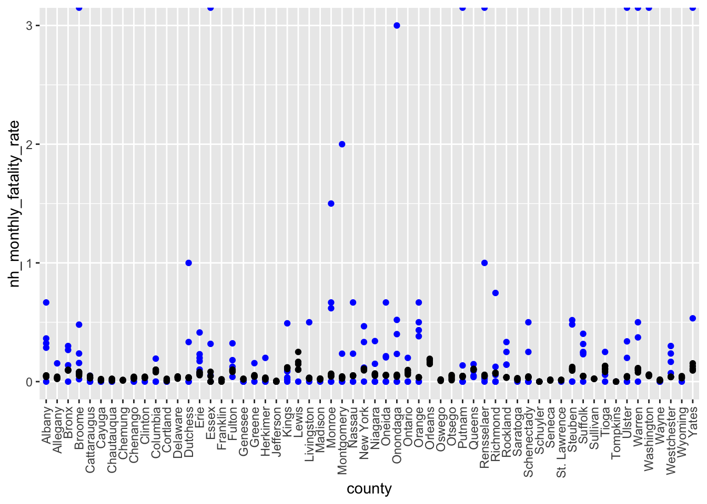

Overview
library(tidyverse)## ── Attaching packages ──────────────────────────────────────────── tidyverse 1.3.0 ──## ✓ ggplot2 3.3.2 ✓ purrr 0.3.4
## ✓ tibble 3.0.3 ✓ dplyr 1.0.2
## ✓ tidyr 1.1.2 ✓ stringr 1.4.0
## ✓ readr 1.3.1 ✓ forcats 0.5.0## ── Conflicts ─────────────────────────────────────────────── tidyverse_conflicts() ──
## x dplyr::filter() masks stats::filter()
## x dplyr::lag() masks stats::lag()library(p8105.datasets)
library(ggplot2)
library(plotly)##
## Attaching package: 'plotly'## The following object is masked from 'package:ggplot2':
##
## last_plot## The following object is masked from 'package:stats':
##
## filter## The following object is masked from 'package:graphics':
##
## layoutlibrary(gganimate)## No renderer backend detected. gganimate will default to writing frames to separate files
## Consider installing:
## - the `gifski` package for gif output
## - the `av` package for video output
## and restarting the R sessionNH Home overview
# read in raw data "overall_df.csv"
overall_df =
read.csv("./data/overall_df_2020.11.27.csv") %>%
janitor::clean_names()# explore the trend of new cases per month
NH_newcase_permonth =
overall_df %>%
select(month, county, residents_covid19_cases_per_month)
County_newcase_permonth =
overall_df %>%
select(month, county, monthly_new_positives)
monthly_new_cases =
ggplot() +
geom_point(data = NH_newcase_permonth, aes(x = month, y = residents_covid19_cases_per_month), color = "blue") +
geom_point(data = County_newcase_permonth, aes(x = month, y = monthly_new_positives), color = "black") +
theme(axis.text.x = element_text(angle = 90, vjust = 0.5, hjust = 1)) +
theme(legend.position = "right")
monthly_new_cases## Warning: Removed 38 rows containing missing values (geom_point).## Warning: Removed 60 rows containing missing values (geom_point).
# explore the trend of infection rate
NH_infection_rate =
overall_df %>%
select(month, county, county_monthly_prevalence)
County_infection_rate =
overall_df %>%
select(month, county, monthly_infection_rate)
compare_infection_rate =
ggplot() +
geom_point(data = NH_infection_rate, aes(x = county, y = county_monthly_prevalence), color = "blue") +
geom_point(data = County_infection_rate, aes(x = county, y = monthly_infection_rate), color = "black") +
theme(axis.text.x = element_text(angle = 90, vjust = 0.5, hjust = 1)) +
theme(legend.position = "right")
compare_infection_rate## Warning: Removed 49 rows containing missing values (geom_point).## Warning: Removed 60 rows containing missing values (geom_point).
# explore the trend of case fatality rate
NH_case_fatality_rate =
overall_df %>%
select(month, county, nh_monthly_fatality_rate)
County_case_fatality_rate =
overall_df %>%
select(month, county, monthly_fatality_rate)
compare_fatality_rate =
ggplot() +
geom_point(data = NH_case_fatality_rate, aes(x = county, y = nh_monthly_fatality_rate), color = "blue") +
geom_point(data = County_case_fatality_rate, aes(x = county, y = monthly_fatality_rate), color = "black") +
theme(axis.text.x = element_text(angle = 90, vjust = 0.5, hjust = 1)) +
theme(legend.position = "right")
compare_fatality_rate## Warning: Removed 180 rows containing missing values (geom_point).## Warning: Removed 60 rows containing missing values (geom_point).